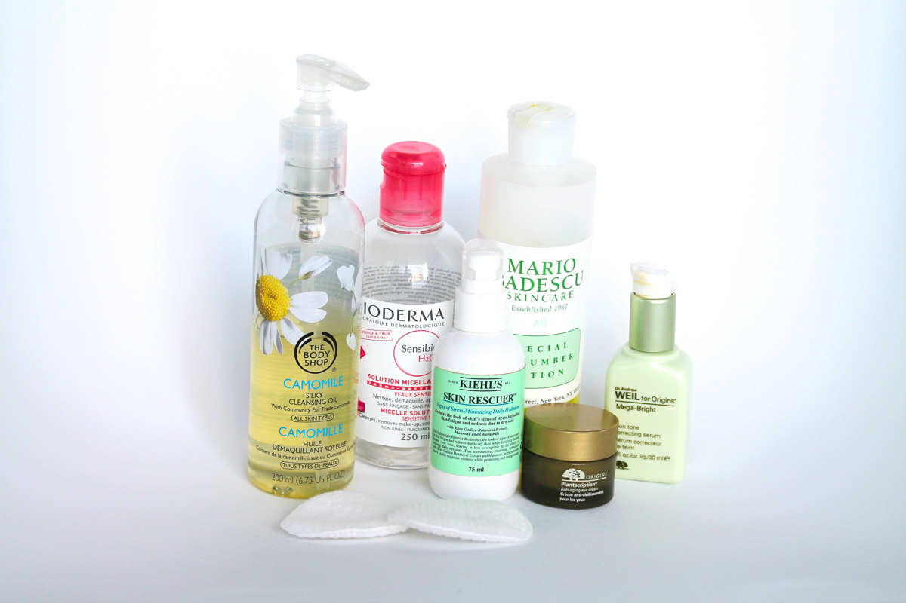

 Routine du soir J’adore me maquiller et essayer toute sorte de nouveaux produits. Cependant, après une longue journée, c’est tellement …
Routine du matin Pour se réveiller du bon pied et pour bien commencer la journée, un bon nettoyage du visage s’impose. Ma routine change…